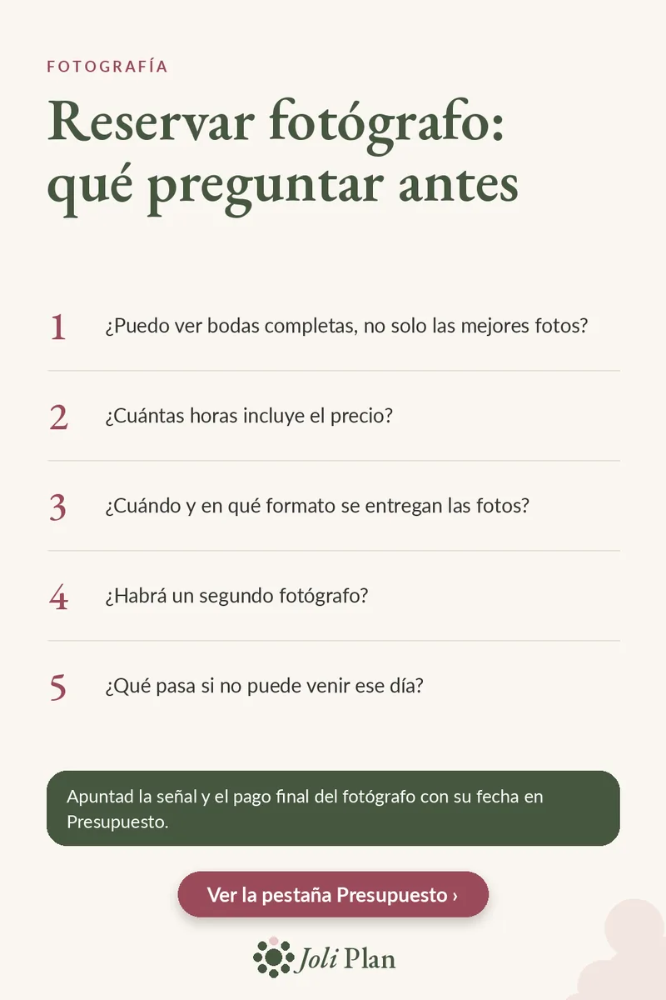

Presupuesto
Fotógrafo de boda: qué preguntar antes de reservar
Actualizado el 11/11/2026
Las fotos son un recuerdo que se mira muchas veces después de la boda, así que merece la pena aclarar todo antes de firmar. Estas cinco preguntas os ayudan a comparar fotógrafos con los mismos criterios y a evitar sorpresas en el presupuesto.
Ver el planificador de boda en Etsy ›

Las 5 preguntas
- ¿Puedo ver bodas completas, no solo las mejores fotos?
- ¿Cuántas horas incluye el precio?
- ¿Cuándo y en qué formato se entregan las fotos?
- ¿Habrá un segundo fotógrafo?
- ¿Qué pasa si no puede venir ese día?
Qué buscar en cada respuesta
Ver una boda completa os dice más que un álbum de portada: así comprobáis si el estilo se mantiene de principio a fin y cómo trabaja con luz difícil o con mucha gente.
Las horas incluidas marcan la diferencia entre presupuestos que parecen iguales. Comparad qué parte del día cubre cada uno: preparativos, ceremonia, banquete, baile.
La fecha y el formato de entrega conviene tenerlos claros desde el principio, para saber cuándo veréis las fotos y en qué formato las recibiréis.
Fijaos también en si responde con calma y con detalle: la persona que se pasará horas a vuestro lado durante el día debe transmitiros confianza. Si algo no queda claro, pedid que os lo envíe por escrito antes de decidir.
Segundo fotógrafo y plan B
Un segundo fotógrafo permite cubrir dos momentos a la vez, por ejemplo los preparativos de los dos. Preguntad si está incluido o si se paga aparte.
Pedid también que os expliquen qué ocurre si el fotógrafo no puede asistir ese día: quién lo sustituiría y con qué condiciones. Lo ideal es que quede por escrito en el contrato.
Si os cuesta decidir entre dos fotógrafos, comparad las mismas cinco respuestas lado a lado en una tabla sencilla. A menudo la diferencia está en las horas incluidas y en la entrega, no en el precio de partida.
Apuntarlo en el presupuesto
Una vez elegido, apuntad la señal y el pago final del fotógrafo, cada uno con su fecha. Así veis de un vistazo cuánto queda por pagar y cuándo.
Preguntas frecuentes
¿Qué preguntar a un fotógrafo de boda antes de reservar?
Si podéis ver bodas completas, cuántas horas incluye el precio, cuándo y cómo se entregan las fotos, si habrá segundo fotógrafo y qué pasa si no puede venir.
¿Qué conviene apuntar en el presupuesto?
La señal y el pago final del fotógrafo, cada uno con su fecha.